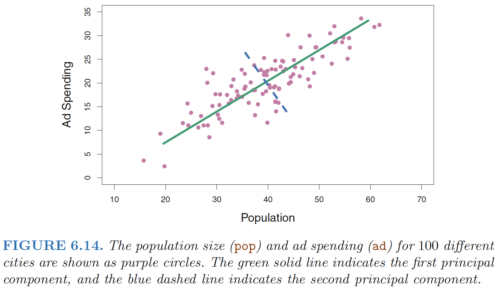
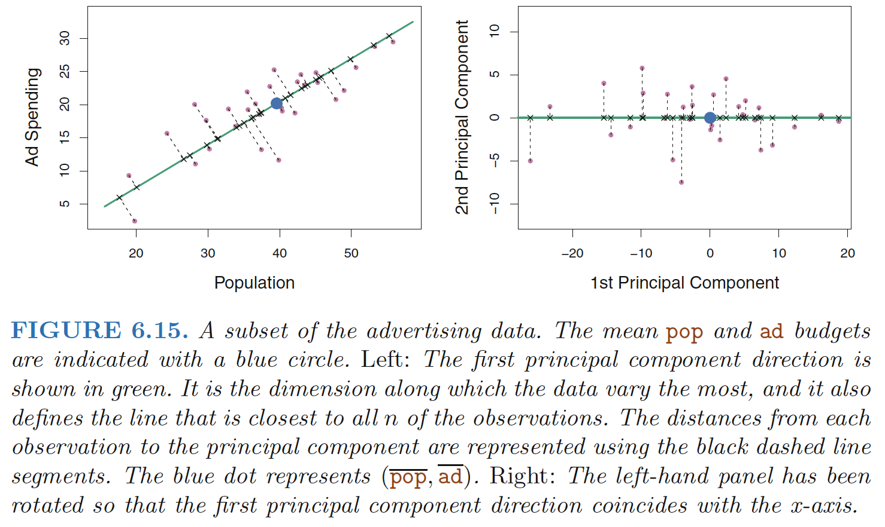
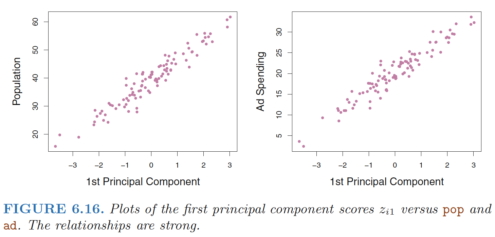
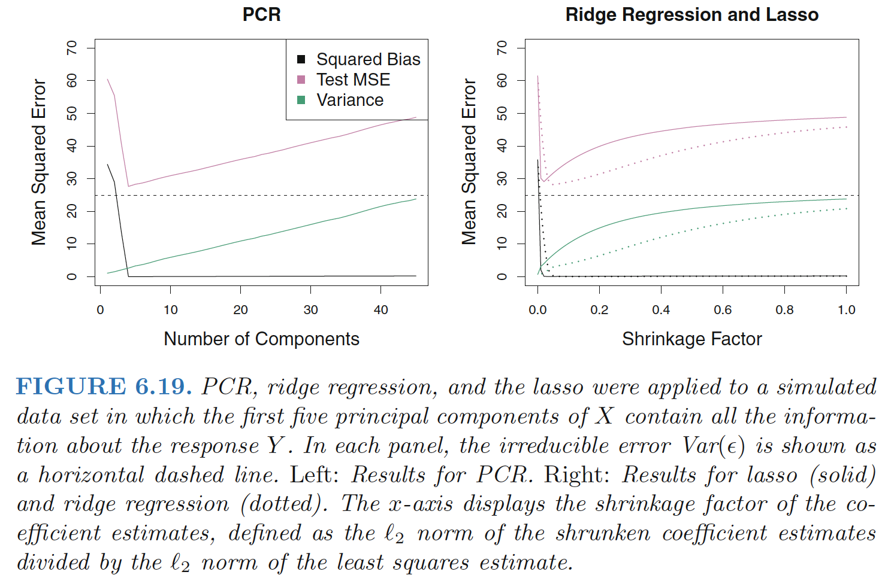
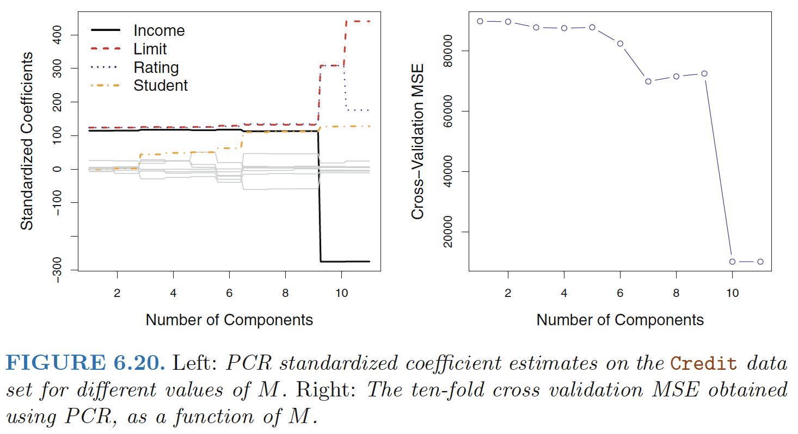

Intro to Dimension Reduction Methods
Subset selection and shrinkage methods all use the original predictors, X1,X2, . . . , Xp.
Dimension Reduction Methods transform the predictors and then fit a least squares model using the transformed variables.
Approach
Let Z1,Z2, . . . ,ZM represent M < p linear combinations of our original p predictors. That is,
\[\begin{align} Z_m=\sum_{j=1}^p\phi_{jm}X_j \end{align}\]
for some constants φ1m, φ2m . . . , φpm, m = 1, . . .,M. We can then fit the linear regression model
\[\begin{align} y_i=\theta_0+\sum_{m=1}^M\theta_m z_{im}+\epsilon_i \quad i=1,2,3,4,...,n \end{align}\]
Dimension reduction: reduces the problem of estimating the p+1 coefficients β0, β1, . . . , βp to the simpler problem of estimating the M + 1 coefficients θ0, θ1, . . . , θM, where M < p. In other words, the dimension of the problem has been reduced from p + 1 to M + 1.
\[\begin{align} \sum_{m=1}^M\theta_m z_{im}&=\sum_{m=1}^M\theta_m \sum_{j=1}^p\phi_{jm}x_{ij}=\sum_{m=1}^M\sum_{j=1}^p\theta_m \phi_{jm}x_{ij}=\sum_{j=1}^p \beta_jx_{ij} \\ \beta_j&=\sum_{m=1}^M\theta_m \phi_{jm} \end{align}\]
All dimension reduction methods work in two steps:
- the transformed predictors Z1, Z2, . . . , ZM are obtained.
- the model is fit using these M predictors. However, the choice of Z1, Z2, . . . , ZM, or equivalently, the selection of the φjm’s, can be achieved in different ways.
Principal Components Regression
An Overview of Principal Components Analysis
PCA: is a technique for reducing the dimension of a n × p data matrix X.
1st Principal Component
Interpretation 1: greatest variability
The first principal component direction of the data: is that along which the observations vary the most.

The first principal component direction is the direction along which there is the greatest variability in the data. That is, if we projected the 100 observations onto this line (as shown in the left-hand panel of Figure 6.15), then the resulting projected observations would have the largest possible variance

The first principal component is given by the formula
\[\begin{align} Z_1 = 0.839 × (pop − \bar{pop}) + 0.544 × (ad − \bar{ad}) \end{align}\]
Here φ11 = 0.839 and φ21 = 0.544 are the principal component loadings, which define the direction referred to above.
The idea is that out of every possible linear combination of pop and ad such that \(\phi_{11}^2+\phi_{21}^2=1\), this particular linear combination yields the highest variance: i.e. this is the linear combination for which \(Var(φ_{11} × (pop − \bar{pop}) + φ_{21} × (ad − \bar{ad}))\) is maximized.
Principal Component Scores
The values of \(z_{11}, . . . , z_{n1}\) are known as the principal component scores, and can be seen in the right-hand panel of Figure 6.15. For example,
\[\begin{align} z_{i1} = 0.839 × (pop_i − \bar{pop}) + 0.544 × (ad_i − \bar{ad}) \end{align}\]
Interpretation 2: closest to data
There is also another interpretation for PCA: the first principal component vector defines the line that is as close as possible to the data.
In Figure 6.14, the first principal component line minimizes the sum of the squared perpendicular distances between each point and the line.
In the right-hand panel of Figure 6.15, the left-hand panel has been rotated so that the first principal component direction coincides with the x-axis. It is possible to show that the first principal component score for the ith observation is the distance in the x-direction of the ith cross from zero.
Interpretation 3: single number summarization
We can think of the values of the principal component Z1 as single number summaries of the joint pop and ad budgets for each location.
In this example, if \(z_{i1} = 0.839 × (pop_i − pop) + 0.544 × (ad_i − ad) < 0\), then this indicates a city with below-average population size and belowaverage ad spending.

Figure 6.16 displays \(z_{i1}\) versus both pop and ad. The plots show a strong relationship between the first principal component and the two features. In other words, the first principal component appears to capture most of the information contained in the pop and ad predictors.
2nd Principal Component
The second principal component Z2 is a linear combination of the variables that is uncorrelated with Z1, and has largest variance subject to this constraint.
It turns out that the zero correlation condition of Z1 with Z2 is equivalent to the condition that the direction must be perpendicular, or orthogonal, to the first principal component direction.
The second principal component is given by the formula:
\[\begin{align} Z_2 = 0.544 × (pop − \bar{pop}) − 0.839 × (ad − \bar{ad}). \end{align}\]
Figure 6.15. The fact that the second principal component scores are much closer to zero indicates that this component captures far less information.
The Principal Components Regression Approach
The principal components regression (PCR) approach involves constructing principal components regression the first M principal components, Z1, . . ., ZM, and then using these components as the predictors in a linear regression model that is fit using least squares
The key idea
Often a small number of principal components suffice to explain most of the variability in the data, as well as the relationship with the response. In other words, we assume that the directions in which X1, . . .,Xp show the most variation are the directions that are associated with Y
Example

- Performing PCR with an appropriate choice of M can result in a substantial improvement over least squares
- PCR does not perform as well as the two shrinkage methods
- Reason: The data were generated in such a way that many principal components are required in order to adequately model the response. In contrast, PCR will tend to do well in cases when the first few principal components are sufficient to capture most of the variation in the predictors as well as the relationship with the response.
Note: even though PCR provides a simple way to perform regression using M < p predictors, it is not a feature selection method!
- This is because each of the M principal components used in the regression is a linear combination of all p of the original features.
- PCR is more closely related to ridge regression than to the lasso. One can even think of ridge regression as a continuous version of PCR!
Cross-validation: In PCR, the number of principal components, M, is typically chosen by cross-validation.

Standardisation: When performing PCR, we generally recommend standardizing each predictor, prior to generating the principal components. - In the absence of standardization, the high-variance variables will tend to play a larger role in the principal components obtained, and the scale on which the variables are measured will ultimately have an effect on the final PCR model.